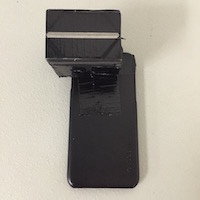

Steps:
I based my design off the example from MIT Open Courses, and modified it to fit my phone.
I found an ugly magenta phone case in a bargin bin for $3. With a bit of (unnecessary) spray paint, I converted it to a more reasonable and boring black.
I cut up a small piece of difraction grating, found in my classroom but also avaible online for cheap. Or you could do what MIT recommends and cut up a CD, although if you're like me you would have to go out a buy a CD to cut up. Where's AOL when we need them?
I shortened the tube until I could see the full spectrum as large as possible, around 2 cm long, I think. In one model (found here), the tube was bent to the side to capture the rainbow from just one side of the slit, but I thought it might be nice to have two sides to get twice as much data. (Just kidding, I was too lazy to make a slanted cut).
The final spectroscope looked like this:
I have a massive advantage as a physics teacher, because I have access to the glowing tubes we use when investigating the electromagnetic spectrum.
Surprisingly, the trickiest part of this part of this adventure was finding a program to take pictures without compression.
"Oh no!" the internet says. "Nowadays compression algorithms are so good that there is pratically no loss of information. There's no reason you could ever want to deal with uncompressed data", they say.
What they haven't considered is you might be a physics teacher with a passing interest in astronomy and a desire to build your own optical instruments.
(Internet people thinking they know what you want grumble grumble grumble multinational corporations cough cough apple cough cough removing features from the default camera app grumble grumble grumble)
Anyway, I eventually found a free app that would let me save my pictures as tif files.
Here's what the raw data looked like:
You probably noticed that the lines above are curved and wondered what I'm going to do about that. The answer turns out to be "not a darn thing".
I did manage to straighten out the picture, and I had a good time doing it. First I had to convert the picture to an array (technically a list of lists, I think). Then I found the maximum value for each row of data and fit a parabola to the data (assuming that the data is quadratic).
Using the line of best fit, I created a scale factor for each row to shorten each row down to the same length as the middle row.
The end result looked like this:
So straight!
Alas, the actual data from the straightened picture was worse than just taking data from the middle of the unstraightened pic. So it goes.
from PIL import Image
def readImage(element):
tiff = "tif/Element" + str(element) + ".tif"
img = Image.open(tiff)
return img
def cropImage(img, CropHeight):
width, height = img.size
box = (0, height/2-CropHeight/2, width, height/2+CropHeight/2)
img = img.crop(box).convert('L')
return imgage

def flattenImage(img):
w, h = img.size
data = []
for x in range(w):
value = 0
for y in range(h):
value = value + img.getpixel((x,y))
data = data + [value]
return data
def findCenter(data):
maximum = 0 # maximum value
maximum_x = 0 # x position of maximum value
for x in range(0, len(data)):
if data[x] > maximum:
maximum = data[x]
maximum_x = x
twothirds = maximum * .6667
bottom = maximum_x
top = maximum_x
while data[bottom] > twothirds:
bottom = bottom - 1
while data[top] > twothirds:
top = top + 1
return int((bottom + top)/2)
def cropData(data, center, start, end):
start = center+start
end = center+end
data = data[start:end]
return data
def smoothData(data, times):
for i in range(0, times):
smooth_data = []
for x in range(0, len(data)-1):
smooth_data = smooth_data + [(data[x-1]+2*data[x]+data[x+1])/4]
data = smooth_data
return data
def findPeaks(data):
peakPosition = []
peakHeight = []
avg = sum(data)/len(data)
for x in range(1, len(data)-1):
if data[x-1] < data [x] and data[x+1] < data[x] and
data[x] > avg:
peakHeight = peakHeight+[data[x]]
peakPosition = peakPosition+[x]
return (peakPosition,peakHeight)
Note that the peaks appear at blue, green, yellow, and red, just like in the original photo.